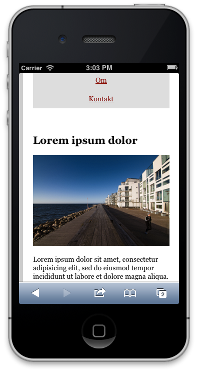
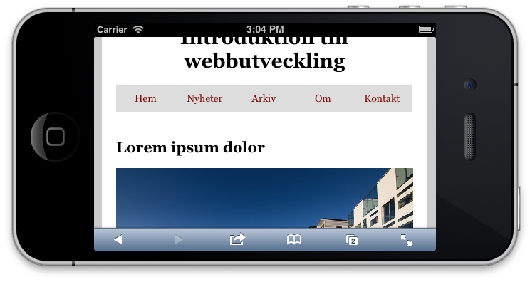

Föreläsning 9: Media Queries & Responsive Design
Exempel
Det färdiga exemplet från föreläsningen finns här. Brytpunkterna går att illustrera enkelt (hur fungerar det i din telefon?):
 
Läsning
- Anamma flexibilitet: The Dao of Web Design (2000).
- Resonsive Web Design - artikeln som myntade begreppet.
- Boken.
- Media Queries - W3C-rekommendation 19 juni, 2012.